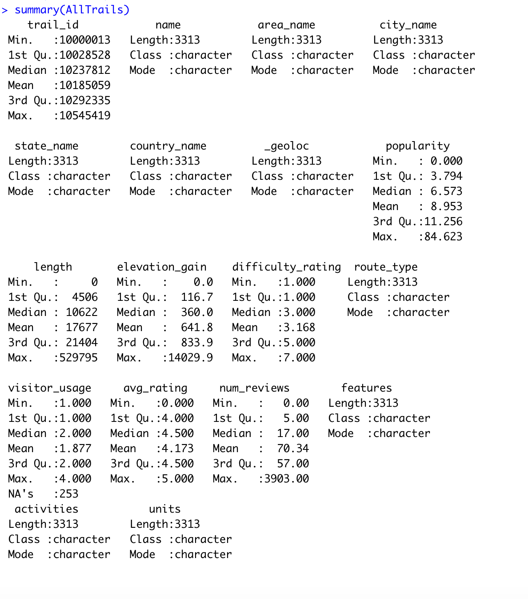

I want to look at National Park data for my research project. I will do research and analyze which parks have the most visitors and if there are specific months and years where the visitation increased or decreased. By looking at the distributions of visitation, I want to identify what could’ve caused these spikes and peaks. With this data, I want to see if I can determine if certain parks are given more funding by the National Park Service.
I also want to see where most of the parks are located in the country, and if there is a specific location where there are more or less parks. I want to see how the climate patterns have affected these National Parks, and if any parks suffered from climate disruptions. In addition to this, I want to look at other events in history, such as the stock market crashes, the financial crisis, and COVID-19 to see if more people visited the parks during these times and enjoyed a “staycation” instead of traveling abroad or at resorts. The National Park Service is primarily funded by Congress, but also is funded through park entrance fees and some private philanthropies. For years the National Park Service has lacked the funding it needs to maintain and protect these national parks. Since the first National Park, Yellowstone, was established in 1872, there have been an additional 400 National Parks with over 20,000 employees added. This research is important, because it can help determine how much funding the National Parks need and which ones need more attention than others. It can help us discover how different issues have affected these National Parks. It can also help us see if certain parks should be closed during certain times of the year in order to have a more efficient and effective budget for these parks. If I can gather all the data I want, such as species counts, climate, and pollution, I will be able to analyze which parks and locations have the biggest problems with these issues. We’ve seen National Parks becoming overcrowded and polluted. Being able to identify these indicators and which parks suffer the most, will allow me to see what needs to be done in order to keep these National Parks from deteriorating. We know that national parks provide peaceful places to enjoy scenery and give wildlife and native plants a safe home which maintains our ecosystem. Economically, national parks create jobs in tourism, park management and capital works and draw visitors to regional areas where they spend their money in local towns. My null hypothesis would be “Is visitation increasing or decreasing at certain parks and does the amount of federal funds correlate to those numbers or are there other factors that can be tied to the participation numbers such as climate change or pollution issues?” I have already collected a lot of data on the National Parks and the trails, depicting visitation and traffic counts. I am still working on finding more available data on the climate in these locations. Most of my data is from the National Park Services, I am also trying to scrap data from the National Weather Service. My approach to answering this question is to first look at the basic statistics like, number of parks per state, number of trails per park, popularity of each National Park vs the number of visitors, geographical locations of parks and how popular the parks are based on the activities they offer. Next I want to find more data on National Park funding and see how this correlates with visitation and popularity. I also want to look at climate trends and see how this might affect the visitation statistics. I will find the annual and monthly number of visitors for each park and each state, then see if there are seasonal trends based on location.

Is visitation increasing or decreasing at certain parks and does the amount of federal funds correlate to those numbers or are there other factors that can be tied to the participation numbers such as climate change or pollution issues?